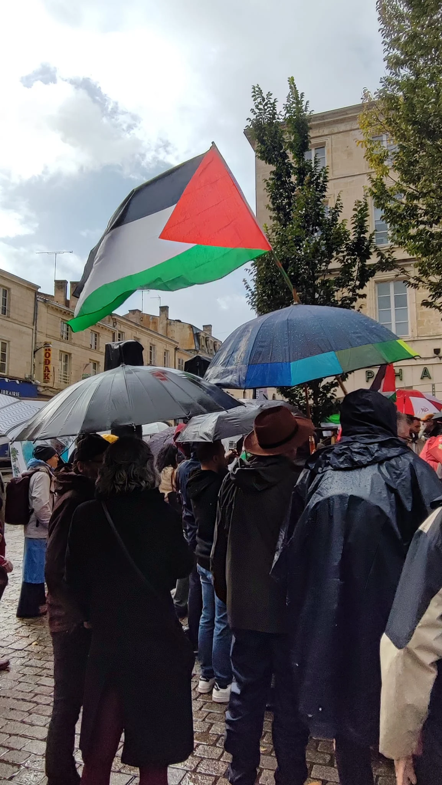
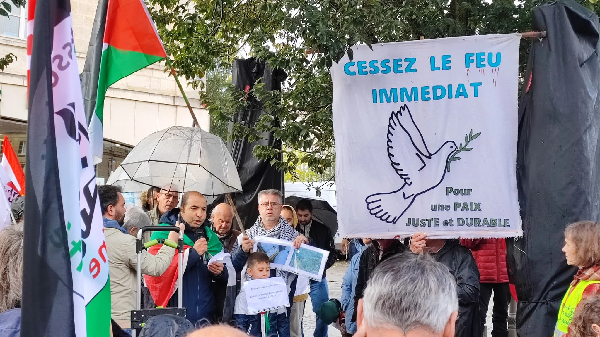
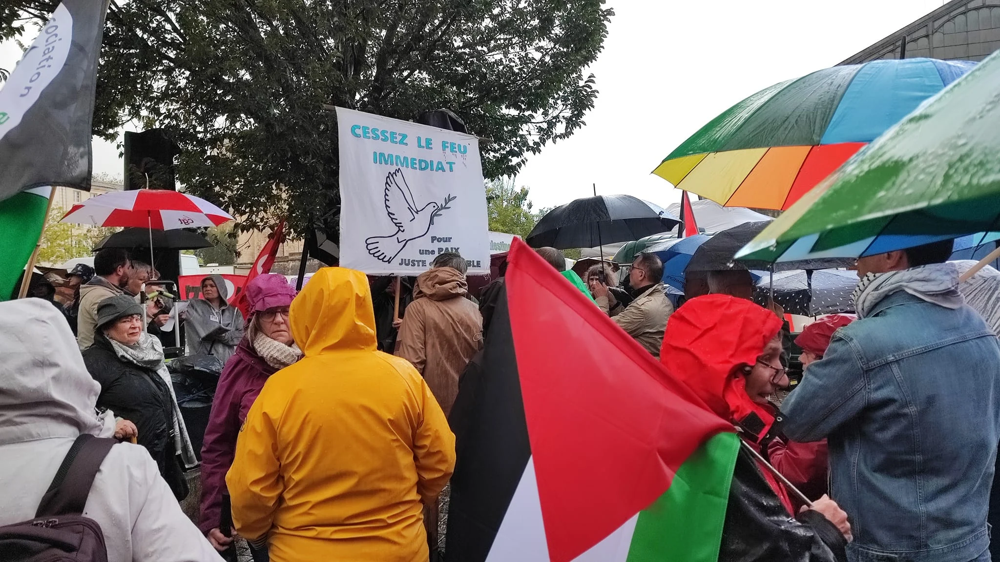
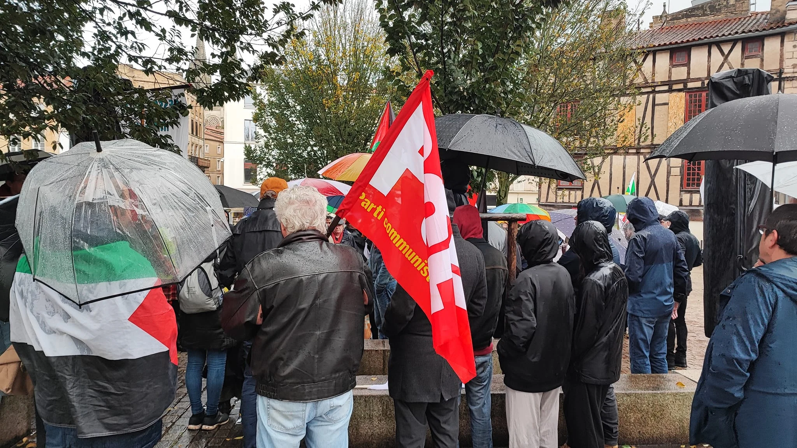
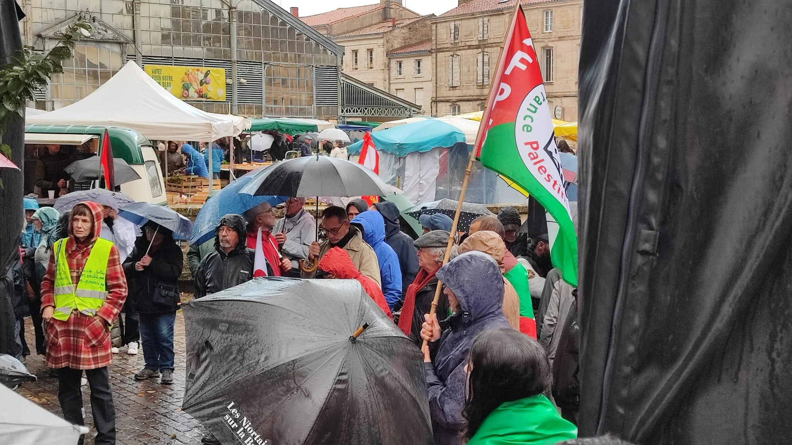
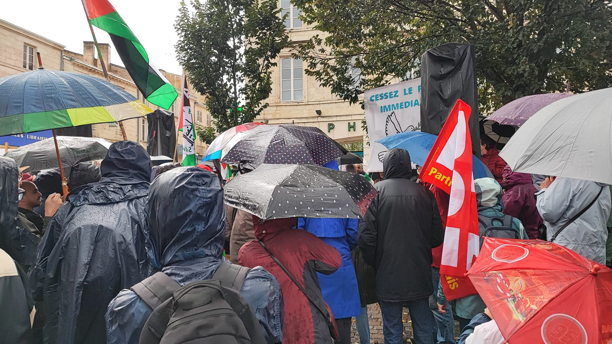
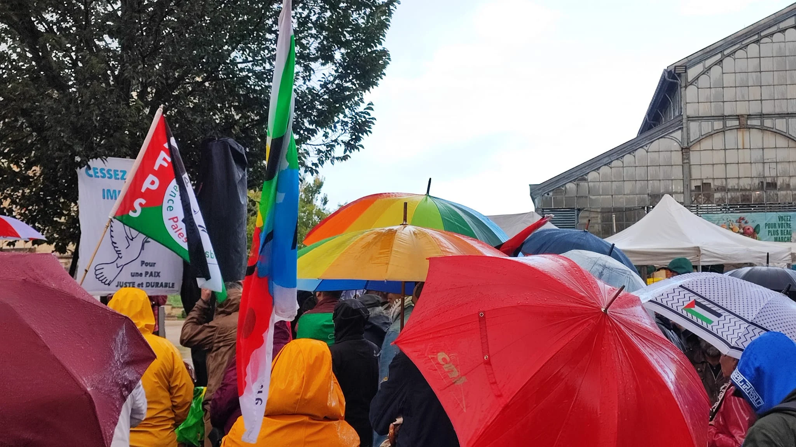

Compte rendu fédéral
À Niort, le 4 novembre, nous avons demandé un cessez-le-feu à Gaza
Date indiquée par Facebook · 5 novembre 2023
Repères éditoriaux
Sous la pluie, nous avons rejoint le rassemblement de solidarité avec le peuple palestinien. Sept images documentent ce rendez-vous et ses revendications.
Texte conservé avec la publication
Rassemblement du 4 novembre à Niort pour un cessez le feu à Gaza.
Une solidarité avec les civils palestiniens, envers les Gazaouis coincés sous les bombes de l'armée israélienne.







Sources
Archive rouge · export Facebook · AR-0002-FB-01547
À lire aussi · Le Collectif pour la Palestine 79 a appelé à un rassemblement pacifique sur la place devant le marché de Niort…